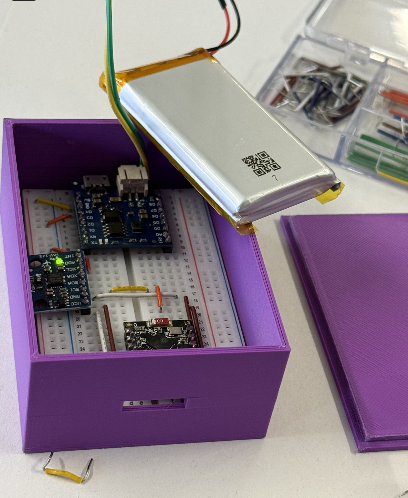
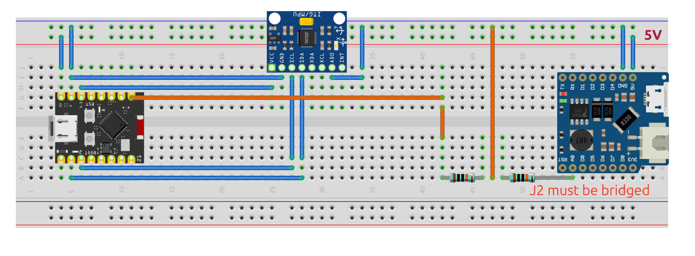
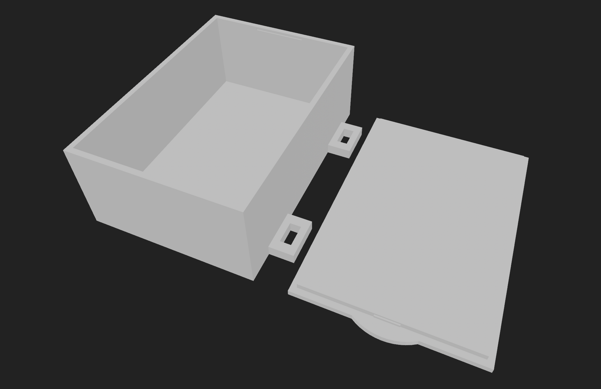

bikesensor
Geo-tagged Bike Vibration Analysis
Combining hardware, BLE, and signal processing to map road quality.
The Concept
How do we measure the quality of a road or trail while riding?
- Attach an Inertial Measurement Unit (IMU) to the bike.
- Record high-frequency vibration data (acceleration & gyro).
- Correlate time-series vibrations with GPS coordinates.
- Map the "bumpiness" and frequency spectrum of the route.
The Hardware
- Microcontroller: ESP32-C3 SuperMini
- Sensor: MPU-6050 (6-axis IMU)
- Connectivity: Bluetooth Low Energy (BLE)
- Power: Battery with voltage divider for monitoring.

Wiring Diagram
Hardware connections mapped out in Fritzing.

Enclosure Design
Custom 3D-printed housing to securely mount the system.

Data Collection
No bulky cellular modules or SD cards required.
- The Phone: Acts as the data hub.
- BLE Logging: LightBlue app receives stream from ESP32.
- Location: Any GPX recorder app runs in the background.
Vibration Analysis (FFT)
Understanding road texture through frequency.
- STFT (Short-Time Fourier Transform): Breaks data into small windows (e.g., 0.5s).
- Frequency Bands: Separates slow rolling hills from harsh gravel chatter.
- Intensity: RMS and Max Bump (g-force) highlight the biggest impacts.
Data Pipeline
Built exclusively with Python and uv.
- Parses raw hex packets (SYNC & DATA).
- Aligns timestamps with GPS positions.
- Extracts vibration features.
- Outputs processed CSVs for fast dashboard loading.
Interactive Dashboard
Powered by Streamlit & Plotly
- Map Analysis: Interactive heatmap of road roughness.
- Deep Dive: Click any point on the map to view local time-domain and FFT data.
- Metrics: Max Bump (g), RMS, speed, and battery consumption.

Launch Dashboard 🚀
Summary
- Low-cost hardware using the ESP32 ecosystem.
- Signal processing for road texture analysis.
- Powerful, accessible visualization via Streamlit.
Ready to ride.